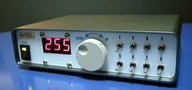
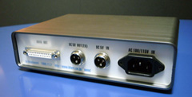

ロジックのテストをするために作ったTTLレベル出力の汎用データスイッチです。独立した８つのスイッチ出力と、ロータリエンコーダによる0〜255dまでの8bit出力の計16bit出力が可能です。ロータリエンコーダのデコード、値設定用のカウンタにXilinx
→ 移転先: https://www.amd.com/ja/products/adaptive-socs-and-fpgas.html Xilinx は 2022 年 AMD に買収。AMD 日本語 FPGA 頁（Xilinx の記載あり）のCPLD、XC9500シリーズを使用しました。今回はケースのコンソールパネルに少し凝って見ました。
ｂｙ すすたわり
